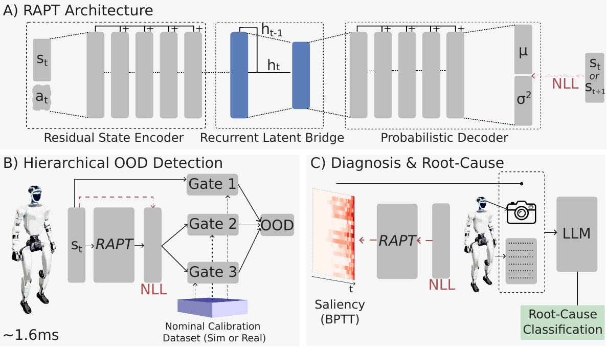
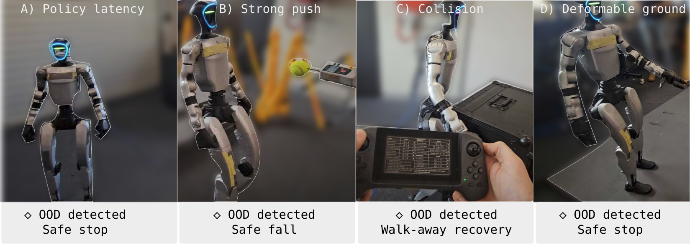

1The University of Queensland 2CSIRO Robotics, Data61
arXiv preprint 2602.01515 · February 2026
Deploying learned control policies is risky because policies that appear robust in simulation can confidently enter out-of-distribution (OOD) states after Sim-to-Real transfer, causing silent failures and potential hardware damage. Existing anomaly detectors often fail to meet the combined requirements of high-rate control, extremely low false-positive rates, and interpretable failure feedback.
We present RAPT (Recurrent Anomaly Probabilistic Trajectory Model), a lightweight, self-supervised 50 Hz deployment monitor that learns nominal execution from large-scale simulation and produces calibrated, per-dimension predictive-deviation signals online. RAPT enables OOD detection under strict false-positive constraints while localizing when and where real execution departs from nominal behavior. For post-hoc diagnosis, RAPT combines temporal saliency, joint-kinematic summaries, and LLM-based semantic reasoning to classify likely failure causes in a zero-shot setting.
In simulation across four Isaac Lab tasks, RAPT improves TPR by 37% over the strongest baseline at 0.5% episode-level FPR; on hardware, it achieves 89% TPR across 78 trials with fewer false positives than high-frequency-compatible baselines, and reaches 75% semantic failure diagnosis accuracy across 21 categories on a challenging OOD subset.
A residual state encoder, recurrent latent bridge, and probabilistic decoder model nominal trajectories with a heteroscedastic Gaussian likelihood. At deployment, the per-dimension negative log-likelihood feeds three calibrated statistical gates — a per-dimension spike gate, a global drift gate, and a physical range gate — evaluated in ~1.6 ms per control step. Thresholds are calibrated on a nominal batch from simulation, or from a brief verified real-world run to absorb static deployment offsets. When a detection fires, integrated gradients through time localize which observation dimensions drove the anomaly and when, and a multimodal LLM classifies the physical root cause from a fixed 21-class failure taxonomy.


The G1 simulation OOD benchmark used for evaluation is available on HuggingFace: hmunn/rapt-g1-ood — nominal training episodes, dedicated calibration splits, and labeled test sequences spanning all 14 OOD categories for velocity tracking and both motion-mimicry tasks (~1.6 GB, float16). Loading snippets, the data format, and single-command benchmarking live in the code release.
If you find RAPT useful, please cite:
@article{munn2026rapt,
title = {RAPT: Model-Predictive Out-of-Distribution Detection and Failure
Diagnosis for Sim-to-Real Humanoid Deployment},
author = {Munn, Humphrey and Tidd, Brendan and B{\"o}hm, Peter and
Gallagher, Marcus and Howard, David},
journal = {arXiv preprint arXiv:2602.01515},
year = {2026}
}
The paper is distributed under the arXiv.org perpetual non-exclusive license (arXiv:2602.01515v1). The code release is available under the BSD 3-Clause License.